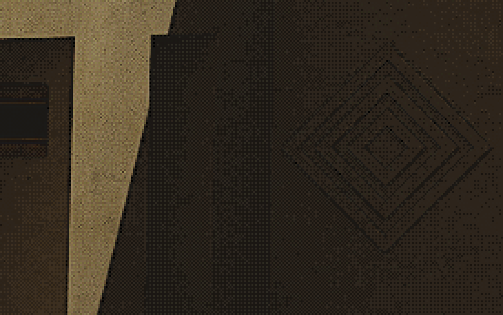

pipe-grotto.jpg
pipe-grotto.jpg
pipe-grotto.jpg
pipe-grotto.jpg
'pipe grotto' is a glimpse of some strange, lost place, inspired by the themes of loneliness and quietness encapsulated by liminal space themes. the piece is intentionally slightly off, slightly uncanny, yet also warm and sunny.
this artwork is made entirely within Blender, featuring my metal pipes asset kit and various custom procedural materials.
i feel a very strong connection to this; it's one of my best artworks i think, and it taught me a lot about lighting, scale, framing, and proportion for surreal spaces.
it also features a stylised post-processing effect i created which reduces the colour palette and dithers the result (using a simple bit of maths i developed myself), as well as applying colour correction and sharpening effects.
